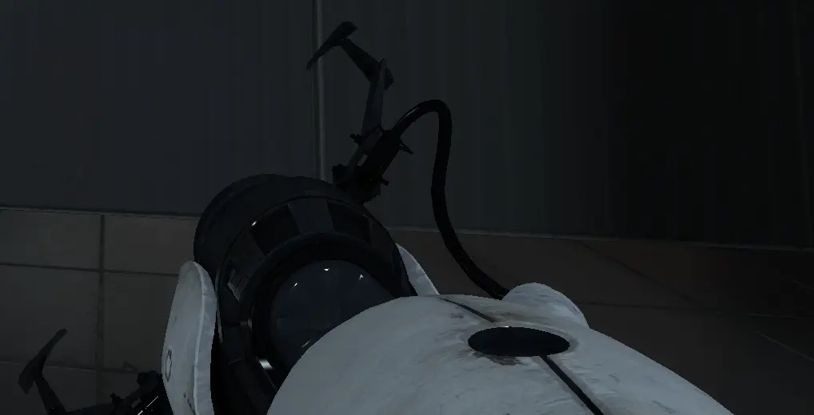
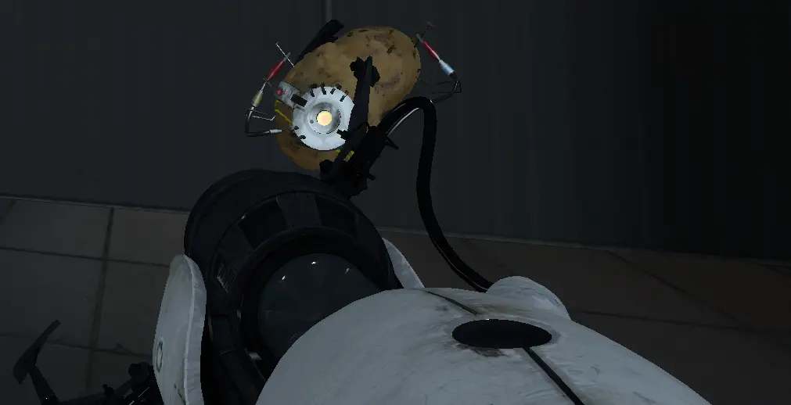
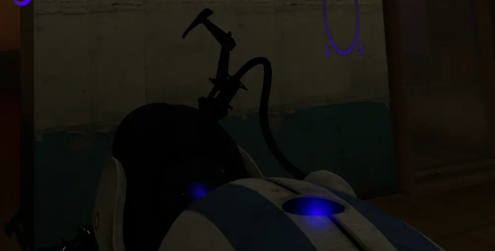
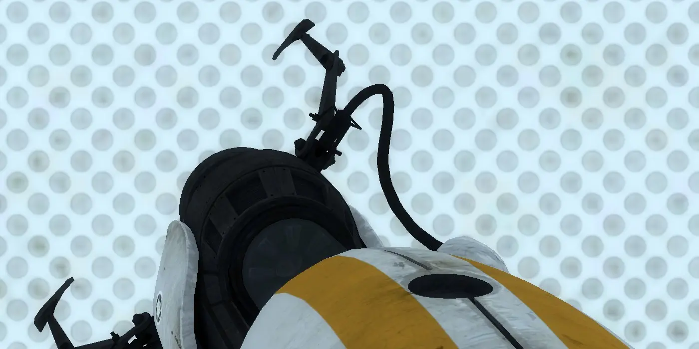

#### Portal Guns

<table>
    <tr>
        <th>Texture</th>
        <th>Image</th>
        <th>Path and Extra Information</th>
    </tr>
    <tr>
        <td>Singleplayer Gun</td>
        <td></td>
        <td>
            <code>materials/models/weapons/v_models/v_portalgun/v_portalgun.vtf</code> (viewmodel, shows in HUD)<br/>
            <code>materials/models/weapons/w_models/w_portalgun/w_portalgun.vtf</code> (worldmodel, shows in world/through portals)
        </td>
    </tr>
    <tr>
        <td>Singleplayer PotatOS<br/>(Potato Texture)</td>
        <td></td>
        <td>
            <code>materials/models/weapons/v_models/v_portalgun/potatos_vmodel.vtf</code> (viewmodel)<br/>
            <code>materials/models/w_models/portalgun/w_portalgun_potatos.vtf</code> (worldmodel)
        </td>
    </tr>
    <tr>
        <td>Co-Op Atlas Gun</td>
        <td></td>
        <td>
            <code>materials/models/weapons/v_models/v_portalgun/v_portalgun_blue.vtf</code> (viewmodel, shows in HUD) <br/>
            <code>materials/models/weapons/w_models/w_portalgun/w_portalgun_blue.vtf</code> (worldmodel, shows in world/through portals)
        </td>
    </tr>
    <tr>
        <td>Co-Op P-Body Gun</td>
        <td></td>
        <td>
            <code>materials/models/weapons/v_models/v_portalgun/v_portalgun_orange.vtf </code> (viewmodel, shows in HUD) <br/>
            <code>materials/models/w_models/portalgun/w_portalgun_orange.vtf</code> (worldmodel, shows in world/through portals)
        </td>
    </tr>
</table>
